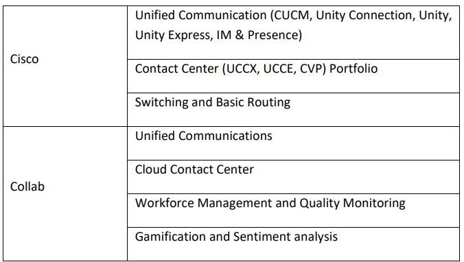
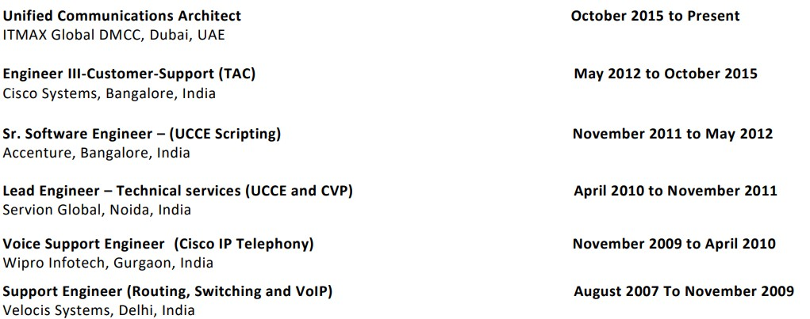
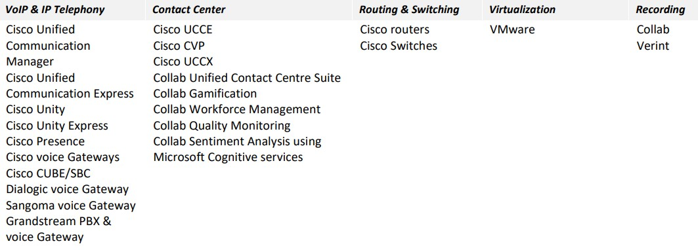

Intend to build a challenging career with a leading organization and to work in an environment where I can
put my abilities to test and execute successfully.
To keep up to date with the latest technological advancements that will help me build a future where I can
eventually lead successful technical workforce.
Executive Summary
Highly motivated, dynamic, result oriented professional with more than 14 years of rich experience in the
field of Unified Communications, enterprise collaboration & Contact Center Technologies.
Good at designing, planning, deploying and managing the voice infrastructure that is reliable, secure and
standards based solution.
Skill Summary

Strengths
Never-lose attitude and always an optimist.
Collaboration and team work with focus on interpersonal skills.
Professional Certification & Education
Cisco CCIE-Collab Certified (CCIE #40875)
VMware Certified Professional 5 - Data Center Virtualization
Collab OneContact Contact Center solution
Collab Contact Center Gamification and Workforce management suite
Cisco – CCNA (CSCO-11394501)
Verint Screen and Voice Recording servers
Employment History

Technical Experience

Academic Qualifications
Bachelor of Technology - Computer Science (2003 - 2007)
Uttar Pradesh Technical University, Lucknow, India
Declaration
I hereby declare that all the above details furnished are true to the best of my knowledge.